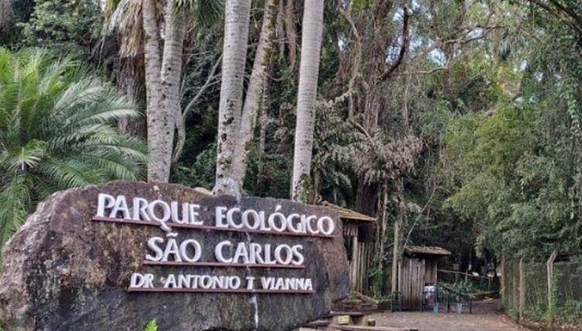

Parque Ecológico de São Carlos

O Parque Ecológico Dr. Antônio Teixeira Vianna, que pertence à cidade de São Carlos, São Paulo, situa-se ao lado da Universidade Federal de São Carlos. A partir de 1988, o parque desenvolveu uma metodologia de trabalho que visa expor, em seus quase 100 recintos, 90% de animais silvestres brasileiros, sendo que 65% dessas espécies estão ameaçadas de extinção. O parque conta com uma extensão de 72 hectares sobre uma vasta vegetação de cerrado e possui um acervo de 445 animais distribuídos em 138 espécies, exibindo, assim, um dos maiores conjuntos de recintos de cerrado para animais silvestres do Brasil.